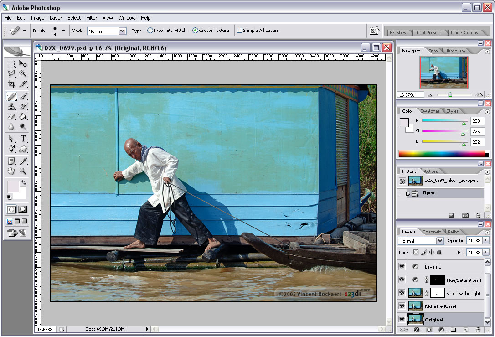

Історія про те, як два студенти кинули виклик Adobe і змінили світ дизайну.
Історія Figma бере свій початок в Університеті Брауна, де навчалися Ділан Філд (Dylan Field) та Еван Уоллес (Evan Wallace). Вони були одержимі ідеєю створення інструментів для творчості. У 2012 році Ділан прийняв доленосне рішення: він подав заявку на отримання стипендії Thiel Fellowship. Це грант у розмірі $100,000, який мільярдер Пітер Тіль видає молодим підприємцям за умови, що вони кинуть навчання і зосередяться на своєму стартапі.
Спочатку їхні ідеї були далекі від дизайну. Вони експериментували з програмним забезпеченням для дронів і навіть генератором мемів. Проте Еван Уоллес, геній комп'ютерної графіки, зміг реалізувати складні алгоритми рендерингу в браузері за допомогою WebGL. Це наштовхнуло їх на думку: "Чому дизайн-інструменти досі прив'язані до операційної системи, якщо майбутнє за вебом?".
Протягом майже чотирьох років Figma перебувала в режимі "стелс" (прихована розробка). Інвестори починали нервувати. Створення повноцінного графічного редактора в браузері здавалося технічно неможливим завданням. Всі професіонали користувалися десктопними Adobe Photoshop та Illustrator, а користувачі Mac починали переходити на Sketch.
Команді довелося переписати рушій браузера. Вони відмовилися від стандартних методів рендерингу і написали власну систему на C++, скомпілювавши її через WebAssembly. Це дозволило досягти неймовірної продуктивності.
У вересні 2016 року Figma стала доступною для всіх. Головною інновацією, яка шокувала ринок, став "мультиплеєр". Вперше в історії кілька дизайнерів могли редагувати один файл одночасно. Курсори колег літали по екрану в реальному часі. Це вирішило вічну проблему "conflicting copies" та пересилання файлів "final_design_v2_final.sketch".
У 2022 році Adobe оголосила про намір купити Figma за рекордні $20 мільярдів. Це викликало паніку серед дизайнерів, які боялися монополії та підвищення цін. Однак регулятори ЄС та Великобританії заблокували угоду через антимонопольні побоювання. У грудні 2023 року компанії офіційно розійшлися, і Figma залишилася незалежною, отримавши $1 мільярд відступних від Adobe.